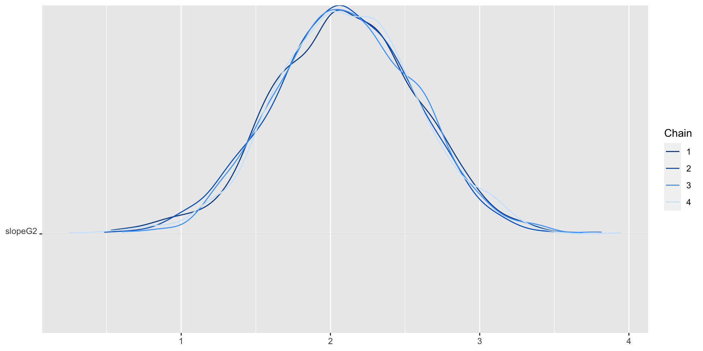
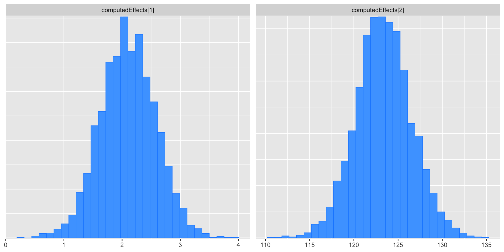
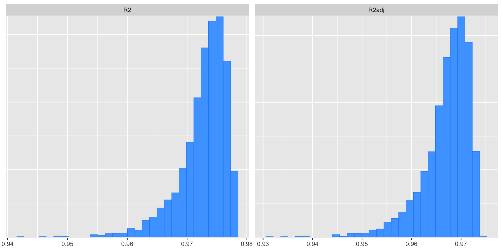

Lecture 04
Linear Regression Model with Stan II
Jihong Zhang
Educational Statistics and Research Methods
Today’s Lecture Objectives
Making Stan Syntax Shorter
Computing Functions of Model Parameters
Download R file DietDataExample2.R
In previous class…
R code for data read in library (cmdstanr)library (bayesplot)library (tidyr)library (dplyr)color_scheme_set ('brightblue' )<- read.csv (here:: here ("posts" , "2024-01-12-syllabus-adv-multivariate-esrm-6553" , "Lecture03" , "Code" , "DietData.csv" ))$ DietGroup <- factor (dat$ DietGroup, levels = 1 : 3 )$ HeightIN60 <- dat$ HeightIN - 60 :: kable ( rbind (head (dat), tail (dat)) ) |> kableExtra:: kable_classic_2 () |> :: kable_styling (full_width = F, font_size = 15 )
1
1
1
56
140
-4
2
2
1
60
155
0
3
3
1
64
143
4
4
4
1
68
161
8
5
5
1
72
139
12
6
6
1
54
159
-6
25
25
3
70
259
10
26
26
3
52
201
-8
27
27
3
59
228
-1
28
28
3
64
245
4
29
29
3
65
241
5
30
30
3
72
269
12
Introduce the empty model
Example: Post-Diet Weights
WeightLB (Dependent Variable ): The respondents’ weight in pounds
HeightIN: The respondents’ height in inches
DietGroup: 1, 2, 3 representing the group to which a respondent was assigned
The empty model has two parameters to be estimated: (1) \(\beta_0\) , (2) \(\sigma_e\)
The posterior mean/median of \(\beta_0\) should be mean of WeightLB
The posterior mean/median of \(\sigma_e\) should be sd of WeightLB
Making Stan Code Short and Efficient
The Stan syntax from our previous model was lengthy:
A declared variable for each parameter
The linear combination of coefficients by multiplying predictors
Stan has built-in features to shorten syntax:
Matrices/Vectors
Matrix products
Multivariate distribution (initially for prior distributions)
Built-in Functions (sum() +=)
Note: if you are interested in Efficiency tuning in Stan, look at this Charpter for more details.
Linear Models without Matrices
The linear model from our example was:
\[
\text{WeightLB}_p = \beta_0 + \beta_1 \text{HeightIN}_p + \beta_2 \text{Group2}_p + \beta_3\text{Group3}_p \\
+\beta_4 \text{HeightIN}_p\text{Group2}_p \\
+\beta_5 \text{HeightIN}_p\text{Group3}_p \\
+ e_p
\]
with:
\(\text{Group2}_p\) the binary indicator of person \(p\) being in group 2
\(\text{Group}3_p\) the binary indicator of person \(p\) being in group 3
\(e_p \sim N(0, \sigma_e)\)
Path Diagram of the Full Model
Linear Models with Matrices
Model (predictor) matrix with the size 30 (rows) \(\times\) 6 (columns)
\[
\mathbf{X} = \begin{bmatrix}1 & -4 & 0 & 0 & 0 & 0\\
\vdots & \vdots & \vdots & \vdots & \vdots & \vdots \\
1 & 12 & 0 & 1 & 0 & 12 \end{bmatrix}
\]
Coefficients vectors with the size 6 (rows) \(\times\) 1 (column):
\[
\mathbf{\beta} =
\begin{bmatrix}
\beta_0 \\
\beta_1 \\
\beta_2 \\
\beta_3 \\
\beta_4 \\
\beta_5 \\
\end{bmatrix}
\]
= as.formula ("WeightLB ~ HeightIN60 + DietGroup + HeightIN60*DietGroup" )model.matrix (FullModelFormula, data = dat) |> head ()
(Intercept) HeightIN60 DietGroup2 DietGroup3 HeightIN60:DietGroup2
1 1 -4 0 0 0
2 1 0 0 0 0
3 1 4 0 0 0
4 1 8 0 0 0
5 1 12 0 0 0
6 1 -6 0 0 0
HeightIN60:DietGroup3
1 0
2 0
3 0
4 0
5 0
6 0
Linear Models with Matrices (Cont.)
We then rewrite the equation from
\[
\text{WeightLB}_p = \beta_0 + \beta_1 \text{HeightIN}_p + \beta_2 \text{Group2}_p + \beta_3\text{Group3}_p \\
+\beta_4 \text{HeightIN}_p\text{Group2}_p \\
+\beta_5 \text{HeightIN}_p\text{Group3}_p \\
+ e_p
\]
to:
\[
\mathbf{WeightLB} = \mathbf{X}\boldsymbol{\beta} + \mathbf{e}
\]
Where:
\(\mathbf{WeightLB}\) is the vector of outcome (N \(\times\) 1)
\(\mathbf{X}\) is the model (predictor) matrix (N \(\times\) P for P - 1 predictors)
\(\boldsymbol{\beta}\) is the coefficients vector (P \(\times\) 1)
\(\mathbf{e}\) is the vector for residuals (N \(\times\) 1)
Example: Predicted Values and \(\text{R}^2\)
Similar to Monte Carlo Simulation, given matrices \(P\) and \(\boldsymbol{\beta}\)
Code set.seed (1234 )<- lm (formula = FullModelFormula, data = dat)= coefficients (fit_lm)= length (beta)= model.matrix (FullModelFormula, data = dat)head (X%*% beta)
[,1]
1 149.0639
2 147.5566
3 146.0493
4 144.5419
5 143.0346
6 149.8176
Calculating \(R^2\) and adjusted \(R^2\) :
= crossprod (dat$ WeightLB - X%*% beta) # residual sum of squares = crossprod (dat$ WeightLB - mean (dat$ WeightLB)) # total sum of squares = 1 - rss / tss= 1 - (rss/ (nrow (dat)- P)) / (tss/ ((nrow (dat)- 1 )))data.frame (# r-square # adjusted. r-square
R2 R2.adjust
1 0.9786724 0.9742292
lm function:\(R^2\) and adjusted \(R^2\) :
<- summary (fit_lm)$ r.squared
Vectorize prior distributions
Previously, we defined a normal distribution for each regression coefficient \[
\beta_0 \sim normal(0, 1) \\
\vdots \\
\beta_p \sim normal(0, 1)
\]
They are all univariate normal distribution
Issue: Each parameter had a prior that was independent of the other parameter; then the correlation between betas is low and cannot be changed.
For example, the code shows two betas with univariate normal distribution have low correlation (r = -0.025)
set.seed (1234 )= rnorm (100 , 0 , 1 )= rnorm (100 , 0 , 1 )cor (beta0, beta1)
Vectorize prior distributions (Cont.)
When combining all parameters into a vector, a natural extension is a multivariate normal distribution, so that the betas have a pre-defined correlation strength
The syntax shows the two betas generated by the multivariate normal distribution with correlation of .5
set.seed (1234 )= matrix (c (1 , 0.5 , 0.5 , 1 ), ncol = 2 )= mvtnorm:: rmvnorm (100 , mean = c (0 , 0 ), sigma = sigma_of_betas)= betas[,1 ]= betas[,2 ]cor (beta0, beta1)
Back to the stan code, we need to specify:
Mean vector of betas (meanBeta; size P \(\times\) 1)
Put all prior means for those coefficients into a vector
Covariance matrix for betas (covBeta; size P \(\times\) P)
Put all prior variances into the diagonal; zeros for off diagonal; ’cause we are not sure the potential correlation between betas
Syntax Changes: Data Section
Old syntax without matrix:
data {int <lower =0 > N;vector [N] weightLB;vector [N] height60IN;vector [N] group2;vector [N] group3;vector [N] heightXgroup2;vector [N] heightXgroup3;
data {int <lower =0 > N; // number of observations int <lower =0 > P; // number of predictors (plus column for intercept) matrix [N, P] X; // model.matrix() from R vector [N] weightLB; // outcome real sigmaRate; // hyperparameter: rate parameter for residual standard deviation
Syntax Changes: Parameters Section
Old syntax without matrix:
parameters {real beta0;real betaHeight;real betaGroup2;real betaGroup3;real betaHxG2;real betaHxG3;real <lower =0 > sigma;
parameters {vector [P] beta; // vector of coefficients for Beta real <lower =0 > sigma; // residual standard deviation
Syntax Changes: Prior Distributions Definition
Old syntax without matrix:
model {0 ,100 );0 ,100 );0 ,100 );0 ,100 );0 ,100 );0 ,100 );1 ); // prior for sigma
New syntax with matrix:
multi_normal() is the multivariate normal sampling in Stan, similar to rmvnorm() in R; For uninformative, we did not need to specify
exponential() is the exponential distribution sampling in Stan, similar to rexp()
model {// prior for sigma // linear model
A little more about exponential distribution
The mean of the exp. distribution is \(\frac{1}{\lambda}\) , where \(\lambda\) is called rate parameter
The variance of the exp. distribution is \(\frac{1}{\lambda^2}\)
It is typically positive skewed (skewness is 2)
Question: which hyperparameter rate \(\lambda\) is most informative/uninformative
library (tidyr)library (dplyr)library (ggplot2)= seq (0.1 , 1 , 0.2 )= sapply (rate_list, \(x) dexp (seq (0 , 20 , 0.01 ), x)) |> as.data.frame ()colnames (pdf_points) <- rate_list$ x = seq (0 , 20 , 0.01 )%>% pivot_longer (- x, values_to = 'y' ) %>% mutate (sigmaRate = factor (name, levels = rate_list)%>% ggplot () + geom_path (aes (x = x, y = y, color = sigmaRate, group = sigmaRate), size = 1.2 ) + scale_x_continuous (limits = c (0 , 20 )) + labs (x = "Sigma" )
Since we talked about Exponential distribution…
Let’s dive deeper into Laplace distribution. It is sometimes called double-exponential distribution. Exponential distribution is positive part of Laplace distribution.
\[
\text{PDF}_{exp.} = \lambda e^{-\lambda x}
\]
\[
\text{PDF}_{laplace} = \frac{1}{2b} e^{-\frac{|x - u|}{b}}
\]
Thus, we know that for x > 0, exponential distribution is a special case of Laplace distribution with scale parameter \(b\) as \(\frac{1}{\lambda}\) and location parameter as 0.
Laplace-based distribution, Cauchy, and Horseshoe distribution all belong to so-called “shrinkage ” priors.
Shrinkage priors will be very useful for high-dimensional data (say P = 1000) and variable selection
library (LaplacesDemon)= 1 / rate_list * 2 = sapply (b_list, \(x) dlaplace (seq (- 20 , 20 , 0.01 ), scale = x, location = 0 )) |> as.data.frame ()colnames (pdf_points) <- round (b_list, 2 )$ x = seq (- 20 , 20 , 0.01 )%>% pivot_longer (- x, values_to = 'y' ) %>% mutate (scale = factor (name, levels = round (b_list, 2 ))%>% ggplot () + geom_path (aes (x = x, y = y, color = scale, group = scale), size = 1.2 ) + scale_x_continuous (limits = c (- 20 , 20 )) + labs (x = "" )
Compare results and computational time
Code <- cmdstan_model ("Code/FullModel_Old.stan" )<- list (N = nrow (dat),weightLB = dat$ WeightLB,height60IN = dat$ HeightIN60,group2 = as.numeric (dat$ DietGroup == 2 ),group3 = as.numeric (dat$ DietGroup == 3 ),heightXgroup2 = as.numeric (dat$ DietGroup == 2 ) * dat$ HeightIN60,heightXgroup3 = as.numeric (dat$ DietGroup == 3 ) * dat$ HeightIN60<- mod_full_old$ sample (data = data_full_old,seed = 1234 ,chains = 4 ,parallel_chains = 4 ,refresh = 0
$ summary ()[, - c (9 , 10 )]
# A tibble: 8 × 8
variable mean median sd mad q5 q95 rhat
<chr> <dbl> <dbl> <dbl> <dbl> <dbl> <dbl> <dbl>
1 lp__ -76.7 -76.3 2.17 2.00 -80.8 -73.8 1.00
2 beta0 148. 148. 3.26 3.20 142. 153. 1.00
3 betaHeight -0.370 -0.378 0.495 0.488 -1.17 0.437 1.00
4 betaGroup2 -24.2 -24.1 4.59 4.52 -31.6 -16.4 1.00
5 betaGroup3 81.2 81.1 4.31 4.36 74.6 88.5 1.00
6 betaHxG2 2.46 2.45 0.690 0.678 1.34 3.59 1.00
7 betaHxG3 3.56 3.55 0.658 0.648 2.48 4.66 1.00
8 sigma 8.26 8.10 1.23 1.13 6.52 10.5 1.00
Code <- cmdstan_model ("Code/FullModel_New.stan" )= as.formula ("WeightLB ~ HeightIN60 + DietGroup + HeightIN60*DietGroup" )= model.matrix (FullModelFormula, data = dat)<- list (N = nrow (dat),P = ncol (X),X = X, weightLB = dat$ WeightLB,sigmaRate = 0.1 <- mod_full_new$ sample (data = data_full_new,seed = 1234 ,chains = 4 ,parallel_chains = 4
$ summary ()[, - c (9 , 10 )]
# A tibble: 8 × 8
variable mean median sd mad q5 q95 rhat
<chr> <dbl> <dbl> <dbl> <dbl> <dbl> <dbl> <dbl>
1 lp__ -76.6 -76.3 2.15 2.00 -80.6 -73.9 1.00
2 beta[1] 148. 148. 3.27 3.23 142. 153. 1.00
3 beta[2] -0.374 -0.372 0.483 0.479 -1.16 0.414 1.00
4 beta[3] -24.1 -24.2 4.59 4.45 -31.6 -16.5 1.00
5 beta[4] 81.3 81.3 4.44 4.40 74.1 88.5 1.00
6 beta[5] 2.47 2.48 0.683 0.676 1.32 3.56 1.00
7 beta[6] 3.57 3.57 0.646 0.643 2.52 4.62 1.00
8 sigma 8.25 8.10 1.26 1.20 6.50 10.5 1.00
The differences between two method:
betaGroup3 has the largest differences between two methods
cbind (fit_full_old$ summary ()[,1 ], fit_full_old$ summary ()[, - c (1 , 9 , 10 )] - fit_full_new$ summary ()[, - c (1 , 9 , 10 )])
variable mean median sd mad q5
1 lp__ -0.007672400 0.0063000 0.0242926098 0.007931910 -0.115880
2 beta0 0.071524500 0.1155000 -0.0135811270 -0.029652000 -0.102200
3 betaHeight 0.004062205 -0.0067305 0.0121231572 0.008502340 -0.018165
4 betaGroup2 -0.013670300 0.0513000 -0.0005405792 0.069904590 -0.037665
5 betaGroup3 -0.103896750 -0.2107500 -0.1281290904 -0.041068020 0.468720
6 betaHxG2 -0.019823355 -0.0341300 0.0072874047 0.001823598 0.020645
7 betaHxG3 -0.010911025 -0.0213900 0.0116900063 0.005040840 -0.041349
8 sigma 0.011585872 0.0005500 -0.0326167204 -0.068377512 0.021184
q95 rhat
1 0.03527000 2.381442e-03
2 0.00740000 1.491287e-04
3 0.02306265 1.225973e-03
4 0.07863000 4.621964e-05
5 -0.04479000 -4.035145e-05
6 0.02261500 5.967744e-04
7 0.03879350 6.457172e-05
8 -0.00486500 2.857860e-04
Compare computational time
The Stan code with matrix has faster computation:
$total
[1] 0.2029581
$chains
chain_id warmup sampling total
1 1 0.054 0.043 0.097
2 2 0.063 0.050 0.113
3 3 0.057 0.053 0.110
4 4 0.054 0.044 0.098
$total
[1] 0.16032
$chains
chain_id warmup sampling total
1 1 0.030 0.028 0.058
2 2 0.036 0.033 0.069
3 3 0.036 0.033 0.069
4 4 0.032 0.030 0.062
Pros: With matrices, there is less syntax to write
Model is equivalent
More efficient for sampling (sample from matrix space)
More flexible: modify matrix elements in R instead of individual parameters in Stan
Cons: Output, however, is not labeled with respect to parameters
Computing Functions of Parameters
Often, we need to compute some linear or non-linear function of parameters in a linear model
Missing effects - beta for diet group 2 and 3
Model fit indices: \(R^2\)
Transformed effects - residual variance \(\sigma^2\)
In non-Bayesian (frequentist) analyses, there are often formed with the point estimates of parameters (with standard errors - second derivative of likelihood function)
For Bayesian analyses, however, we seek to build the posterior distribution for any function of parameters
This means applying the function to all posterior samples
It is especially useful when you want to propose your new statistic
Example: Need Slope for Diet Group 2
Recall our model:
\[
\text{WeightLB}_p = \beta_0 + \beta_1 \text{HeightIN}_p + \beta_2 \text{Group2}_p + \beta_3\text{Group3}_p \\
+\beta_4 \text{HeightIN}_p\text{Group2}_p \\
+\beta_5 \text{HeightIN}_p\text{Group3}_p \\
+ e_p
\]
Here, \(\beta_1\) denotes the average change in \(\text{WeightLB}\) with one-unit increase in \(\text{HeightIN}\) for members in the reference group— Diet Group 1.
Question: What about the slope for members in Diet Group 2.
Typically, we can calculate by hand by assign \(\text{Group2}\) as 1 and all effects regarding \(\text{HeightIN}\) :
\[
\beta_{\text{group2}}*\text{HeightIN} = (\beta_1 + \beta_4*1 + \beta_5*0)*\text{HeightIN}
\]
\[
\beta_{\text{group2}}= \beta_1 +\beta_4
\]
Similarly, the intercept for Group2 - the average mean of \(\text{WeightLB}\) is \(\beta_0 + \beta_2\) .
Computing slope for Diet Group 2
Our task: Create posterior distribution for Diet Group 2
# A tibble: 8 × 10
variable mean median sd mad q5 q95 rhat ess_bulk ess_tail
<chr> <dbl> <dbl> <dbl> <dbl> <dbl> <dbl> <dbl> <dbl> <dbl>
1 lp__ -76.6 -76.3 2.15 2.00 -80.6 -73.9 1.00 1401. 1886.
2 beta[1] 148. 148. 3.27 3.23 142. 153. 1.00 1402. 1838.
3 beta[2] -0.374 -0.372 0.483 0.479 -1.16 0.414 1.00 1522. 2019.
4 beta[3] -24.1 -24.2 4.59 4.45 -31.6 -16.5 1.00 1746. 2190.
5 beta[4] 81.3 81.3 4.44 4.40 74.1 88.5 1.00 1538. 2091.
6 beta[5] 2.47 2.48 0.683 0.676 1.32 3.56 1.00 1805. 2118.
7 beta[6] 3.57 3.57 0.646 0.643 2.52 4.62 1.00 1678. 2218.
8 sigma 8.25 8.10 1.26 1.20 6.50 10.5 1.00 2265. 2212.
<- fit_full_new$ draws ("beta[2]" ) + fit_full_new$ draws ("beta[5]" )summary (beta_group2)
# A tibble: 1 × 10
variable mean median sd mad q5 q95 rhat ess_bulk ess_tail
<chr> <dbl> <dbl> <dbl> <dbl> <dbl> <dbl> <dbl> <dbl> <dbl>
1 beta[2] 2.10 2.09 0.478 0.478 1.32 2.88 1.00 4032. 3211.
Computing slope within Stan
Stan can compute these values for us-with the “generated quantities” section of the syntax
Stan code data {int <lower =0 > N; // number of observations int <lower =0 > P; // number of predictors (plus column for intercept) matrix [N, P] X; // model.matrix() from R vector [N] weightLB; // outcome real sigmaRate; // hyperparameter: prior rate parameter for residual standard deviation parameters {vector [P] beta; // vector of coefficients for Beta real <lower =0 > sigma; // residual standard deviation model {// prior for sigma // linear model generated quantities {real slopeG2;2 ] + beta[5 ];
The generated quantities block computes values that do not affect the posterior distributions of the parameters–they are computed after the sampling from each iteration
<- cmdstan_model ("Code/FullModel_compute.stan" )<- mod_full_compute$ sample (data = data_full_new,seed = 1234 ,chains = 4 ,parallel_chains = 4 ,refresh = 0
$ summary ('slopeG2' )
# A tibble: 1 × 10
variable mean median sd mad q5 q95 rhat ess_bulk ess_tail
<chr> <dbl> <dbl> <dbl> <dbl> <dbl> <dbl> <dbl> <dbl> <dbl>
1 slopeG2 2.10 2.09 0.478 0.478 1.32 2.88 1.00 4032. 3211.
:: mcmc_dens_chains (fit_full_compute$ draws ('slopeG2' ))
Alternative way of computing the slope with Matrix
This is a little more complicated but more flexible method.
That is, we can make use of matrix operation and form a contrast matrix
For use, we form a contrast matrix that is size of \(C \times P\) where C is the number of contrasts:
The entries of this matrix are the values that multiplying the coefficients
Then, the contrast matrix is multiplied by the coefficients vector to form the values:
Contrasts in Stan
Stan code data {int <lower =0 > N; // number of observations int <lower =0 > P; // number of predictors (plus column for intercept) matrix [N, P] X; // model.matrix() from R vector [N] weightLB; // outcome real sigmaRate; // hyperparameter: prior rate parameter for residual standard deviation int <lower =0 > nContrasts;matrix [nContrasts, P] contrast; // C matrix parameters {vector [P] beta; // vector of coefficients for Beta real <lower =0 > sigma; // residual standard deviation model {// prior for sigma // linear model generated quantities {vector [nContrasts] computedEffects;
R code <- cmdstan_model ("Code/FullModel_contrast.stan" )<- list (nContrasts = 2 ,contrast = matrix (c (0 ,1 ,0 ,0 ,1 ,0 , # slope for diet group2 1 ,0 ,1 ,0 ,0 ,0 ),# intercept for diet group 2 nrow = 2 , byrow = TRUE <- mod_full_contrast$ sample (data = c (data_full_new, contrast_dat),seed = 1234 ,chains = 4 ,parallel_chains = 4 ,refresh = 0
$ summary ('computedEffects' )[, - c (9 , 10 )]
# A tibble: 2 × 8
variable mean median sd mad q5 q95 rhat
<chr> <dbl> <dbl> <dbl> <dbl> <dbl> <dbl> <dbl>
1 computedEffects[1] 2.10 2.09 0.478 0.478 1.32 2.88 1.00
2 computedEffects[2] 123. 123. 3.16 3.02 118. 129. 1.00
:: mcmc_hist (fit_full_contrast$ draws ('computedEffects' ))
Computing \(\text{R}^2\)
We can use the generated quantities section to build a posterior distribution for \(\text{R}^2\)
There are several formulas for \(\text{R}^2\) , we will use the following:
\[
\text{R}^2 = 1-\frac{RSS}{TSS} = 1- \frac{\Sigma_{p=1}^{N}(y_p -\hat{y}_p)}{\Sigma_{p=1}^{N}(y_p -\bar{y}_p)}
\] Where:
RSS is the residual sum of squares
TSS is the total sum of squares of dependent variable
\(\hat{y}_p\) is the predicted values: \(\hat{y}_p = \mathbf{X}\boldsymbol{\beta}\)
\(\bar{y}_p\) is the mean value of dependent variable: \(\bar{y}_p = \frac{\Sigma_{p=1}^{N}y_p}{N}\)
Notice: RSS depends on sampled parameters, so we will use this to build our posterior distribution for \(\text{R}^2\)
For adjusted \(\text{R}^2\) , we use the following:
\[
\text{adj.R}^2 = 1-\frac{RSS/(N-P)}{TSS/(N-1)} = 1- \frac{\Sigma_{p=1}^{N}(y_p -\hat{y}_p)}{\Sigma_{p=1}^{N}(y_p -\bar{y}_p)}*\frac{N-P}{N-1}
\]
Then, we can calculate the how to calculate \(\text{adj.R}^2\) by \(\text{R}^2\) :
\[
\text{adj.R}^2 = 1-(1-\text{R}^2)*\frac{N-P}{N-1} = \frac{(P-1)+(N-1)R^2}{N-P}
\]
Stan code for Computing \(\text{R}^2\)
Stan code generated quantities {vector [nContrasts] computedEffects;// compute R2 real rss;real tss;real R2;real R2adj;// anything in these brackets will not appear in summary table vector [N] pred = X*beta;// dot_self is stan function for matrix square 1 -rss/tss;1 -(rss/(N-P))/(tss/(N-1 ));
Recall that our lm function provides \(\text{R}^2\) as 0.9787 and adjusted \(\text{R}^2\) as 0.9742
$ summary (c ('rss' , 'tss' , 'R2' ,'R2adj' ))[, - c (9 , 10 )]
# A tibble: 4 × 8
variable mean median sd mad q5 q95 rhat
<chr> <dbl> <dbl> <dbl> <dbl> <dbl> <dbl> <dbl>
1 rss 1941. 1877. 285. 226. 1616. 2499. 1.00
2 tss 71112 71112 0 0 71112 71112 NA
3 R2 0.973 0.974 0.00401 0.00317 0.965 0.977 1.00
4 R2adj 0.967 0.968 0.00484 0.00384 0.958 0.973 1.00
:: mcmc_hist (fit_full_contrast$ draws (c ('R2' , 'R2adj' )))
Get posterior mode
# Create the function. <- function (v) {<- unique (v)which.max (tabulate (match (v, uniqv)))]# Calculate the mode using the user function. getmode (fit_full_contrast$ draws ('R2' ))getmode (fit_full_contrast$ draws ('R2adj' ))
Wrapping up
Today we further added generated quantities into our Bayesian toolset:
How to make Stan use less syntax using matrices
How to form posterior distributions for functions of parameters
We will use both of these features in psychometric models.
Next Class
Bayesian Model fit
Bayesian Model Comparison